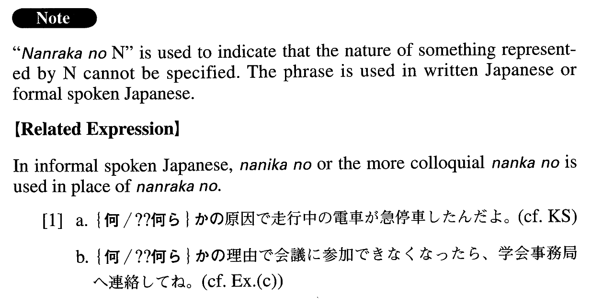

何らかの (A. 333) A phrase used to indicate that the exact nature of something represented by the noun cannot be specified.Some; some kind of
(ks). 何らかの 原因で走行中で電車が急停車した。Due to some (unknown) cause the train stopped suddenly. (a). 私たちが患う病気は、たいてい、何らかの 意味でゲノム関係があります。 Most of the illnesses that we get are linked in some way with genomes. (b). 世界の総人口のおよそ半数の人々が、何らかの 形で米を食べている。 Approximately half the total population of the world eats rice in some form. (c). 何らかの 理由で会議に参加できなくなった場合は、学会事務局へご連絡下さるようお願い申し上げます。If it turns out that you are unable to attend the conference for some reason, we would appreciate it if you would kindly contact the conference office. (d). 食品添加物が我々の身体に何らかの 悪影響を与えると考える人は多い。 Many people think that food additives have some bad effect on our bodies. (e). 火星表面の「運河」と呼ばれる溝は、何らかの 液体によって作られたと考えられていた。 The grooves on Mars' surface that are referred to as "canals" were (originally) presumed to have been caused by some liquid. (f). 我々はそれぞれ何らかの 人生観、社会観を持って生きています。各人の生涯の生活設計に関しても、漠然とした形ではあっても、何らかの デザインをしていると思います。 Each of us is living with a certain outlook on life and society. And no matter how vague it may be, I believe each person is designing a life plan in his/her own way. 